flowchart TD
A[start] --> B(hello)
B --> C[end]
Resource Monitoring and Cloud Optimization for Data Science Tasks with Metaflow
Gergely Daroczi
2025-06-18
Resource Monitoring and Cloud Optimization
for Data Science Tasks with Metaflow
Gergely Daróczi
Spare Cores Team
Slides: sparecores.com/talks
Press Space or click the green arrow icons to navigate the slides ->
>>> from sparecores import badges
- Funded by NGI Search (EU consortium under Horizon Europe)
- Vendor independent, open-source project
- Accepted into the NVIDIA Inception Program
- Beneficiary of cloud credits from 5 vendors (overall ~$100k)
- 10 conference talks in 5 countries (e.g. Berlin Buzzwords, KCD)
- Featured by The Pragmatic Engineer in Oct 2024
- Jeff Barr (Chief Evangelist at AWS) on our Reddit post:
This was awesome, thanks for sharing.
>>> from sparecores import intro
- Open-source tools, database schemas and documentation to inspect and inventory cloud vendors and their offerings, including pricing and measured performance.
- Managed infrastructure, databases, APIs, SDKs, and web applications to make this data publicly accessible.
- Helpers to select, start and manage instances in your own environment.
- Add-on services to scale data science workflows, even without direct vendor engagement.
>>> from sparecores import intro
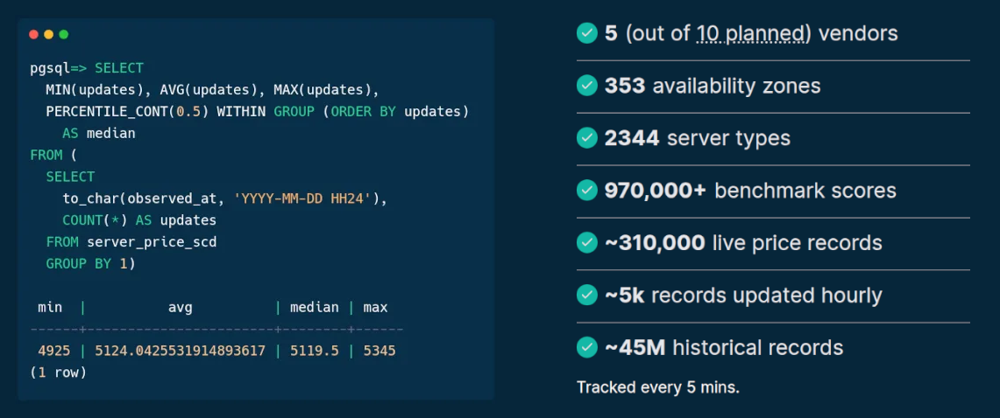Source: sparecores.com
>>> from sparecores import intro
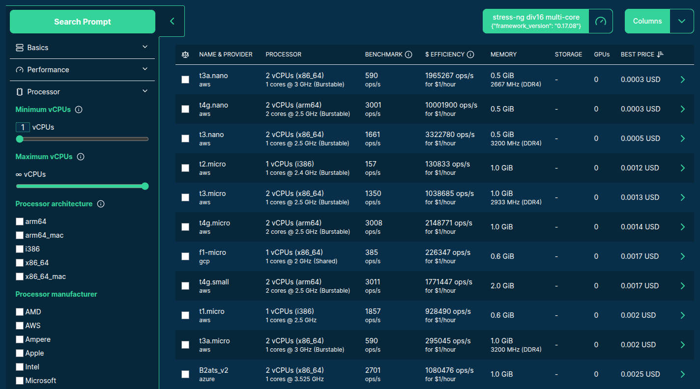
>>> from sparecores import intro
>>> from sparecores import intro
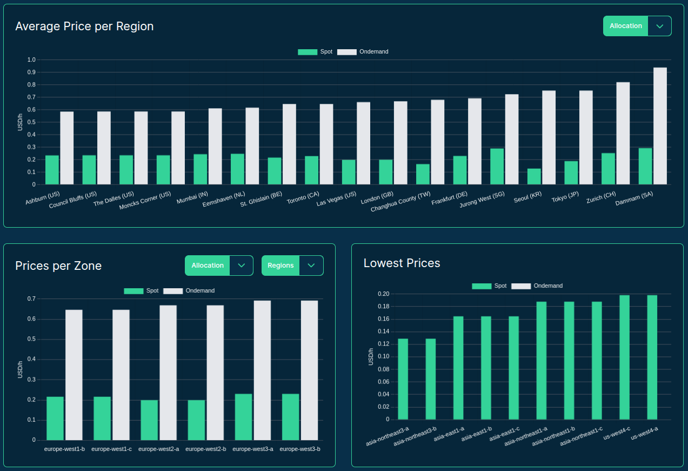
>>> from sparecores import intro
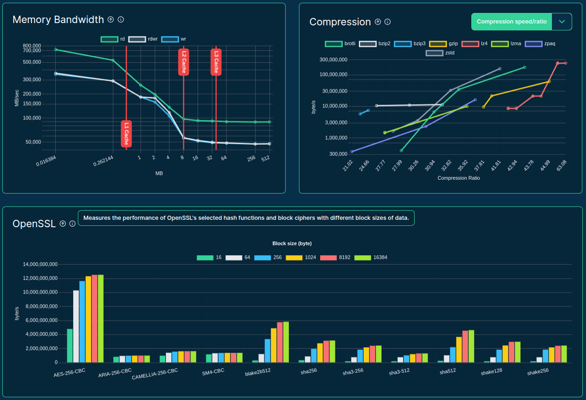
>>> from sparecores import intro
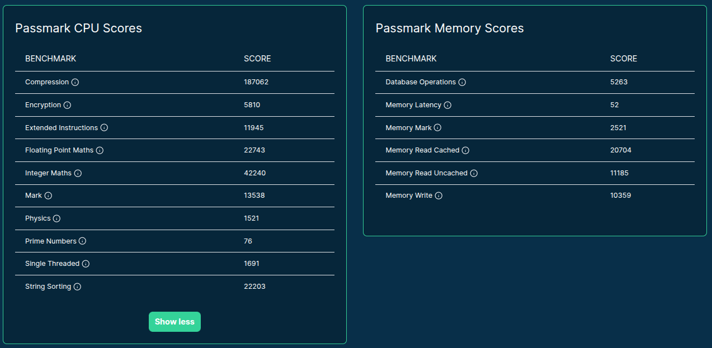>>> from sparecores import intro
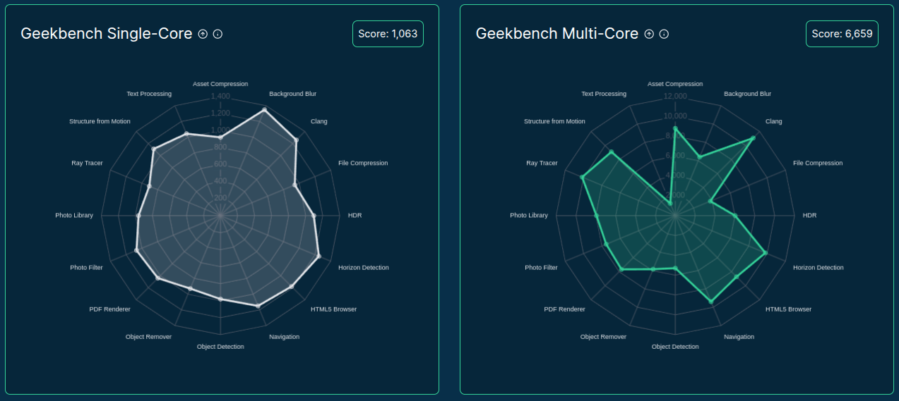>>> from sparecores import intro
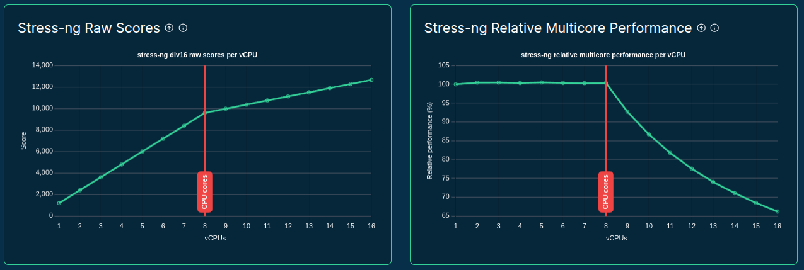>>> from sparecores import intro
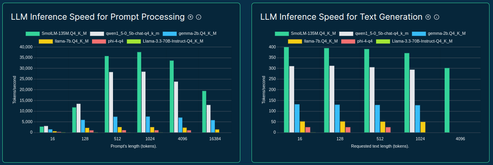>>> from sparecores import intro
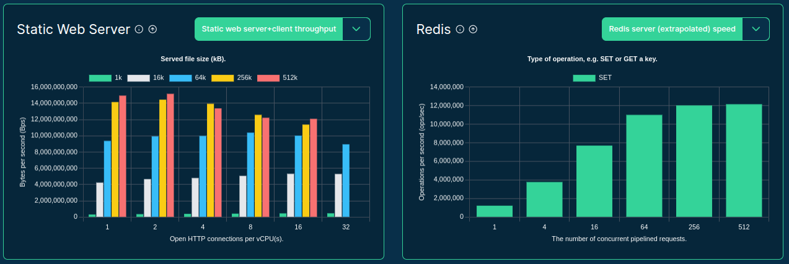>>> from sparecores import intro

>>> from sparecores import intro

>>> from sparecores import intro

>>> from sparecores import intro
>>> from rich import print as pp
>>> from sc_crawler.tables import Server
>>> from sqlmodel import create_engine, Session, select
>>> engine = create_engine("sqlite:///sc-data-all.db")
>>> session = Session(engine)
>>> server = session.exec(select(Server).where(Server.server_id == 'g4dn.xlarge')).one()
>>> pp(server)
Server(
server_id='g4dn.xlarge',
vendor_id='aws',
display_name='g4dn.xlarge',
api_reference='g4dn.xlarge',
name='g4dn.xlarge',
family='g4dn',
description='Graphics intensive [Instance store volumes] [Network and EBS optimized] Gen4 xlarge',
status=<Status.ACTIVE: 'active'>,
observed_at=datetime.datetime(2024, 6, 6, 10, 18, 4, 127254),
hypervisor='nitro',
vcpus=4,
cpu_cores=2,
cpu_allocation=<CpuAllocation.DEDICATED: 'Dedicated'>,
cpu_manufacturer='Intel',
cpu_family='Xeon',
cpu_model='8259CL',
cpu_architecture=<CpuArchitecture.X86_64: 'x86_64'>,
cpu_speed=3.5,
cpu_l1_cache=None,
cpu_l2_cache=None,
cpu_l3_cache=None,
cpu_flags=[],
memory_amount=16384,
memory_generation=<DdrGeneration.DDR4: 'DDR4'>,
memory_speed=3200,
memory_ecc=None,
gpu_count=1,
gpu_memory_min=16384,
gpu_memory_total=16384,
gpu_manufacturer='Nvidia',
gpu_family='Turing',
gpu_model='Tesla T4',
gpus=[
{
'manufacturer': 'Nvidia',
'family': 'Turing',
'model': 'Tesla T4',
'memory': 15360,
'firmware_version': '535.171.04',
'bios_version': '90.04.96.00.A0',
'graphics_clock': 1590,
'sm_clock': 1590,
'mem_clock': 5001,
'video_clock': 1470
}
],
storage_size=125,
storage_type=<StorageType.NVME_SSD: 'nvme ssd'>,
storages=[{'size': 125, 'storage_type': 'nvme ssd'}],
network_speed=5.0,
inbound_traffic=0.0,
outbound_traffic=0.0,
ipv4=0,
)>>> from sparecores import components

>>> import
Workflow orchestration for real-life ML, AI, and DS projects.
- started at Netflix
- open-source (since 2019)
- maintained by Netflix and Outerbounds
- human-centric
- reproducible by design
- scalable
- supports Python and R
>>> from metaflow import tutorial
from metaflow import FlowSpec, step
class HelloFlow(FlowSpec):
@step
def start(self):
print("HelloFlow is starting.")
self.next(self.hello)
@step
def hello(self):
print("Metaflow says: Hi!")
self.next(self.end)
@step
def end(self):
print("HelloFlow is all done.")
if __name__ == "__main__":
HelloFlow()>>> from metaflow import tutorial
from metaflow import FlowSpec, step
class HelloFlow(FlowSpec):
@step
def start(self):
print("HelloFlow is starting.")
self.next(self.hello)
@step
def hello(self):
print("Metaflow says: Hi!")
self.next(self.end)
@step
def end(self):
print("HelloFlow is all done.")
if __name__ == "__main__":
HelloFlow()>>> from DnD import dices
>>> from metaflow import dices
flowchart TD
A[start] -. dice <br> rolls .-> B(roll)
B -. dice <br> rolls <br> dices ..-> C[end]
from random import sample, randint
from metaflow import FlowSpec, step
class DiceRollFlow(FlowSpec):
# D3, D4, D6, D8, D10, D12, ...
DICES = [3, 4, 6, 8, 10, 12, 100]
@step
def start(self):
self.dice = sample(self.DICES, 1)[0]
self.rolls = sample(range(3), 1)[0] + 1
self.next(self.roll)
@step
def roll(self):
self.dices = [randint(1, self.dice) for _ in range(self.rolls)]
self.next(self.end)
@step
def end(self):
print(f"Rolled {self.rolls} times with a {self.dice} sided dice: {self.dices}")
if __name__ == "__main__":
DiceRollFlow()>>> from metaflow import dices
flowchart TD
A[start] -. dice <br> rolls .-> B(roll)
B -. dice <br> rolls <br> dices ..-> C[end]
from random import sample, randint
from metaflow import FlowSpec, step
class DiceRollFlow(FlowSpec):
# D3, D4, D6, D8, D10, D12, ...
DICES = [3, 4, 6, 8, 10, 12, 100]
@step
def start(self):
self.dice = sample(self.DICES, 1)[0]
self.rolls = sample(range(3), 1)[0] + 1
self.next(self.roll)
@step
def roll(self):
self.dices = [randint(1, self.dice) for _ in range(self.rolls)]
self.next(self.end)
@step
def end(self):
print(f"Rolled {self.rolls} times with a {self.dice} sided dice: {self.dices}")
if __name__ == "__main__":
DiceRollFlow()>>> from metaflow import dices
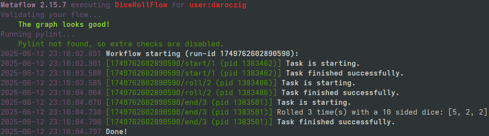
>>> from metaflow import dices
>>> from metaflow import Flow
>>> print(run := Flow("DiceRollFlow").latest_successful_run)
Run('DiceRollFlow/1749762602890590')
>>> run.created_at
datetime.datetime(2025, 6, 12, 23, 10, 2, 891000)
>>> run.data
<MetaflowData: dices, rolls, name, dice>
>>> run.data.dices
[5, 2, 2]
>>> list(run.steps())
[Step('DiceRollFlow/1749762602890590/end'), Step('DiceRollFlow/1749762602890590/roll'), Step('DiceRollFlow/1749762602890590/start')]
>>> step = next(run.steps())
>>> step.task.metadata
[Metadata(name='user', value='daroczig', created_at=1749762604068, type='user', task=Task('DiceRollFlow/1749762602890590/end/3')), ...
>>> step.task.stdout
'Rolled 3 time(s) with a 10 sided dice: [5, 2, 2]\n'
>>> step.task.artifacts.dices.data
[5, 2, 2]>>> from metaflow import more
flowchart TD
A[start] --> B1(fitA)
A[start] --> B2(fitB)
B1 --> C[eval]
B2 --> C[eval]
C --> D[end]
class ModelingFlow(FlowSpec):
@step
def start(self):
self.data = load_data()
self.next(self.fitA, self.fitB)
@step
def fitA(self):
self.model = fit(self.data, model='A')
self.next(self.eval)
@step
def fitB(self):
self.model = fit(self.data, model='B')
self.next(self.eval)
@step
def eval(self, inputs):
self.best = max((i.model.score, i.model)
for i in inputs)[1]
self.next(self.end)
@step
def end(self):
print('done!')>>> from metaflow import more
flowchart TD
A[start] -- data --> B1(fitA)
A[start] -- data --> B2(fitB)
B1 -. data<br>model .-> C[eval]
B2 -. data<br>model .-> C[eval]
C -- data<br>best --> D[end]
class ModelingFlow(FlowSpec):
@step
def start(self):
self.data = load_data()
self.next(self.fitA, self.fitB)
@step
def fitA(self):
self.model = fit(self.data, model='A')
self.next(self.eval)
@step
def fitB(self):
self.model = fit(self.data, model='B')
self.next(self.eval)
@step
def eval(self, inputs):
self.best = max((i.model.score, i.model)
for i in inputs)[1]
self.next(self.end)
@step
def end(self):
print('done!')>>> from metaflow import venv
flowchart TD
style B2 fill:#eab308
A[start] --> B1(fitA)
A[start] --> B2(fitB)
B1 --> C[eval]
B2 --> C[eval]
C --> D[end]
class ModelingFlow(FlowSpec):
@step
def start(self):
self.data = load_data()
self.next(self.fitA, self.fitB)
@step
def fitA(self):
self.model = fit(self.data, model='A')
self.next(self.eval)
@pypi(python='3.10.11', packages={'scikit-learn': '1.7'})
@step
def fitB(self):
self.model = fit(self.data, model='B')
self.next(self.eval)
@step
def eval(self, inputs):
self.best = max((i.model.score, i.model)
for i in inputs)[1]
self.next(self.end)
@step
def end(self):
print('done!')>>> from metaflow import cloud
flowchart TD
subgraph AWS Batch
B1(fitA)
B2(fitB)
end
A[start] .-> B1
A[start] .-> B2
B1 .-> C[eval]
B2 .-> C[eval]
C --> D[end]
class ModelingFlow(FlowSpec):
@step
def start(self):
self.data = load_data()
self.next(self.fitA, self.fitB)
@batch(cpu=32, memory=64)
@step
def fitA(self):
self.model = fit(self.data, model='A')
self.next(self.eval)
@batch(cpu=4, memory=16, gpu=1)
@step
def fitB(self):
self.model = fit(self.data, model='B')
self.next(self.eval)
@step
def eval(self, inputs):
self.best = max((i.model.score, i.model)
for i in inputs)[1]
self.next(self.end)
@step
def end(self):
print('done!')>>> import resource_tracker
- Lightweight (zero-dependency*) Python package
- Supports Python 3.9+
- Monitors system-level and process-level resource usage
- Tracks CPU, memory, GPU/VRAM, network, storage & more
- Ease of use, minimal setup, non-blocking
- Runs in the background, non-blocking
- Framework extensions (e.g. Metaflow)
* No dependencies on Linux;
psutil on other OS.
>>> import resource_tracker
Install from PyPI:
>>> from resource_tracker import ResourceTracker
>>> from time import sleep
>>> from resource_tracker import ResourceTracker
>>> tracker = ResourceTracker()
>>> tracker.pid_tracker
TinyDataFrame with 0 rows and 0 columns. First row as a dict: {}
>>> sleep(1)
>>> tracker.pid_tracker
TinyDataFrame with 1 rows and 12 columns. First row as a dict: {'timestamp': 1750021603.0219927, 'pid': 265803.0, 'children': 3.0, 'utime': 0.05999999999999997, 'stime': 0.1, 'cpu_usage': 0.16, 'memory': 62343.0, 'read_bytes': 0.0, 'write_bytes': 0.0, 'gpu_usage': 0.0, 'gpu_vram': 0.0, 'gpu_utilized': 0.0}
>>> big_array = bytearray(500 * 1024 * 1024) # 500 MiB
>>> total = 0
>>> for i in range(int(1e7)):
... total += i**3
>>> tracker.pid_tracker.tail(1)
{'timestamp': 1750022019.3893294, 'pid': 265803.0, 'children': 3.0, 'utime': 1.0299999999999994, 'stime': 0.06999999999999984, 'cpu_usage': 1.0999, 'memory': 573832.0, 'read_bytes': 0.0, 'write_bytes': 0.0, 'gpu_usage': 0.0, 'gpu_vram': 0.0, 'gpu_utilized': 0.0}
>>> tracker.system_tracker.tail(1)
{'timestamp': 1750022019.3464136, 'processes': 778.0, 'utime': 2.139999999999418, 'stime': 2.60999999998603, 'cpu_usage': 4.7495, 'memory_free': 18372680.0, 'memory_used': 37015416.0, 'memory_buffers': 3612.0, 'memory_cached': 10155400.0, 'memory_active': 29048656.0, 'memory_inactive': 130048.0, 'disk_read_bytes': 95047680.0, 'disk_write_bytes': 7380992.0, 'disk_space_total_gb': 3699.99, 'disk_space_used_gb': 2373.84, 'disk_space_free_gb': 1326.15, 'net_recv_bytes': 8960.0, 'net_sent_bytes': 4732.0, 'gpu_usage': 0.3, 'gpu_vram': 791.0, 'gpu_utilized': 1.0}
>>> tracker.system_tracker
TinyDataFrame with 4 rows and 21 columns. First row as a dict: {'timestamp': 1750022016.3461385, 'processes': 778.0, 'utime': 0.6399999999994179, 'stime': 1.6000000000058208, 'cpu_usage': 2.2398, 'memory_free': 18415448.0, 'memory_used': 36966424.0, 'memory_buffers': 3612.0, 'memory_cached': 10161624.0, 'memory_active': 28951856.0, 'memory_inactive': 130048.0, 'disk_read_bytes': 126976.0, 'disk_write_bytes': 827392.0, 'disk_space_total_gb': 3699.99, 'disk_space_used_gb': 2373.84, 'disk_space_free_gb': 1326.15, 'net_recv_bytes': 9896.0, 'net_sent_bytes': 9101.0, 'gpu_usage': 0.31, 'gpu_vram': 799.0, 'gpu_utilized': 1.0}
>>> del big_array
>>> tracker.stop()>>> from resource_tracker import ResourceTracker
>>> print(tracker.pid_tracker)
TinyDataFrame with 7 rows and 12 columns:
timestamp | pid | children | utime | stime | cpu_usage | memory | read_bytes | write_bytes | gpu_usage | gpu_vram | gpu_utilized
-------------------+----------+----------+-------+-------+-----------+----------+------------+-------------+-----------+----------+-------------
1750022710.052515 | 326380.0 | 3.0 | 0.040 | 0.069 | 0.11 | 62017.0 | 0.0 | 0.0 | 0.0 | 0.0 | 0.0
1750022711.0526254 | 326380.0 | 3.0 | 0.139 | 0.099 | 0.24 | 573959.0 | 0.0 | 0.0 | 0.0 | 0.0 | 0.0
1750022712.05273 | 326380.0 | 3.0 | 1.020 | 0.072 | 1.0899 | 573913.0 | 0.0 | 0.0 | 0.0 | 0.0 | 0.0
1750022713.0528054 | 326380.0 | 3.0 | 1.029 | 0.090 | 1.1199 | 573968.0 | 0.0 | 0.0 | 0.0 | 0.0 | 0.0
1750022714.052872 | 326380.0 | 3.0 | 1.010 | 0.099 | 1.1099 | 573923.0 | 0.0 | 0.0 | 0.0 | 0.0 | 0.0
1750022715.0529463 | 326380.0 | 3.0 | 0.049 | 0.079 | 0.13 | 71775.0 | 0.0 | 0.0 | 0.0 | 0.0 | 0.0
1750022716.0530148 | 326380.0 | 3.0 | 0.060 | 0.099 | 0.16 | 61954.0 | 0.0 | 0.0 | 0.0 | 0.0 | 0.0>>> from resource_tracker import PidTracker, SystemTracker
- Track process and/or system-level resource usage
- Configure to monitor subprocesses
- Configure sampling interval
- Use
PidTrackerandSystemTrackerdirectly (blocking)
Learn more by reading the documentation at
📖 sparecores.github.io/resource-tracker
>>> from metaflow import track_resources
from time import sleep
from metaflow import FlowSpec, step, track_resources
class MinimalFlow(FlowSpec):
@step
def start(self):
self.next(self.do_heavy_computation)
@track_resources
@step
def do_heavy_computation(self):
big_array = bytearray(500 * 1024 * 1024) # 500 MiB
total = 0
for i in range(int(1e7)):
total += i**3 # heavy calcs
del big_array
sleep(1) # do nothing for bit after releasing memory
self.next(self.end)
@step
def end(self):
pass
if __name__ == "__main__":
MinimalFlow()>>> from metaflow import track_resources
>>> from metaflow import track_resources
>>> from metaflow import track_resources
- Host hardware specs and environment information
- Cloud provider, region and instance type discovery
- Tracks CPU, memory, disk I/O and storage, network, GPU/VRAM, and more
- Summary statistics
- Resource recommendations
- Actual cloud server type recommendation with real-time (spot or on-demand) pricing information
- Easy to use (single decorator) 😊
>>> from metaflow import track_resources
>>> from metaflow import track_resources
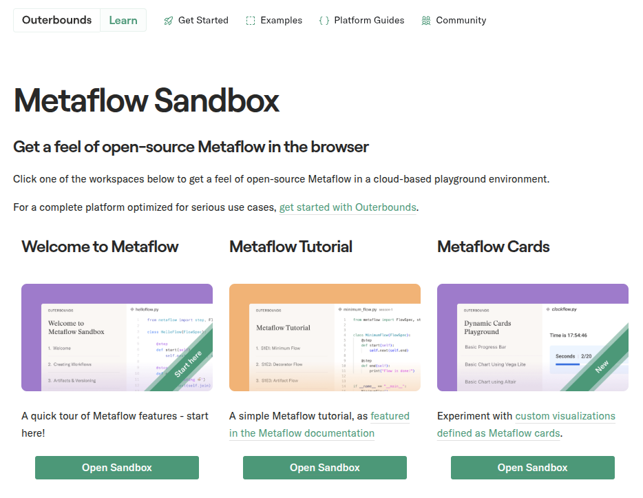
Source: Outerbounds sandbox
>>> import __future__
-
Automated
@resourcestuning - More granular resource mapping
- Step optimization assistant
- Central dashboard for all resource usage
- Proactive resource management
- Email alerts on overprovisioning
- Predict potential job failures due to insufficient resources
- Effortless remote execution
>>> from sparecores import team

@bra-fsn

@palabola

@daroczig
>>> from sparecores import team
@bra-fsn
Infrastructure and Python veteran.
@palabola
Guardian of the front-end and Node.js tools.
@daroczig
Hack of all trades, master of NaN.


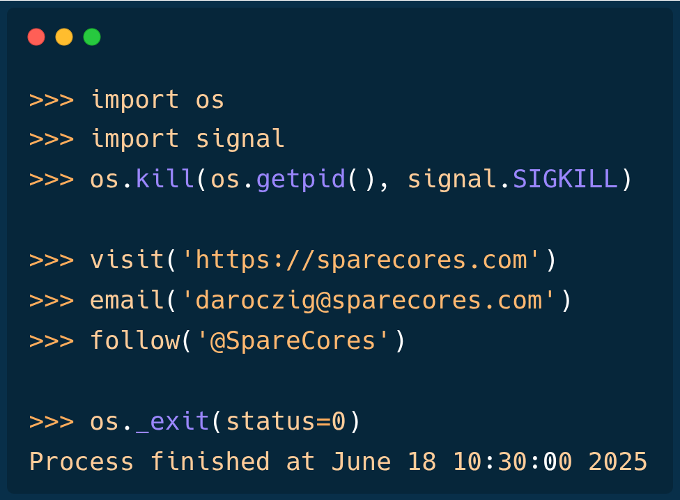
Slides: sparecores.com/talks